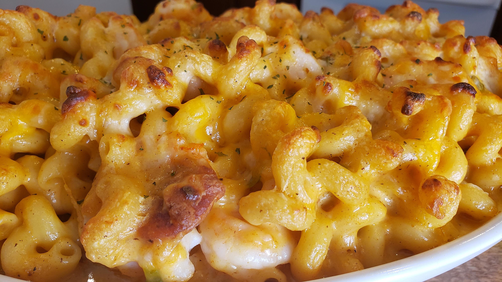

Cajun Mac and Cheese

Description
This recipe turns a boring box of macaroni and cheese into a spicy, meaty, and flavorful dish.
Ingredients
- 1lb Ground Beef
- 1/3 cup Chopped Yellow Onion
- 1/3 cup Chopped Green Pepper
- 1/3 cup Chopped Celery
- 14.5 oz can of Diced Tomatoes, undrained
- 1 tbsp Cajun Seasoning
- 1 box Macaroni and Cheese
- 2 tbsp Milk
- 1 tbsp Butter
Steps
- In a large skillet, cook beef, onion, green pepper and celery over medium heat until beef is no longer pink, then add diced tomatoes and cajun seasoning and cook for an additional 15 to 20 minutes
- Meanwhile, prepare macaroni and cheese according to package instructions, except using 2 tbsp Milk and 1 tbsp Butter instead of the amounts the package calls for
- Stir macaroni and cheese into beef mixture and cook for additional 3 to 5 minutes.